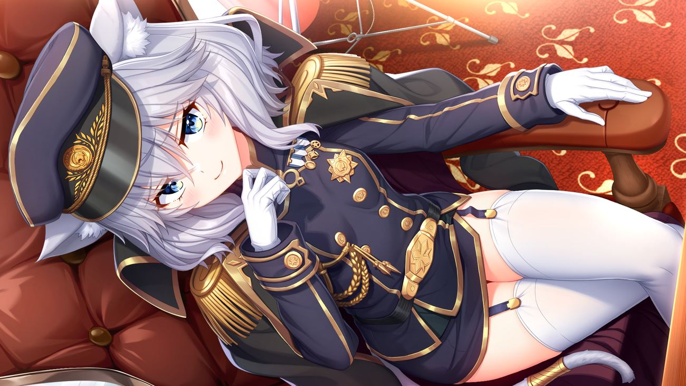

Route · Sophia

Sophia Noscova, Jendral Badan Intelejensi republik Ymir di zona netral. Kemampuan nalar tinggi, selalu mengutamakan logika diatas perasaan — penampilan serta gerak geriknya sebatas topeng untuk mengelabui lawan dan kawan.
Konflik routenya menyangkut tanah airnya yang belum lama terjadi Revolusi — mengubah sistem pemerintahan dari Monarki menjadi Komunis — sehingga banyak menyentuh ide kesetaraan dan diktatorat.